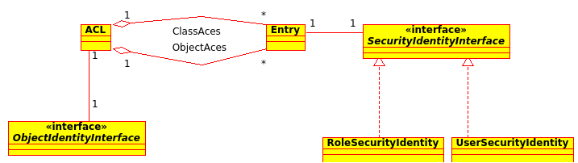

Access Control Lists (ACL)¶
Die Absicherung von Domain-Objekten (generell Datenbank Entities) wird über Access Control Lists (ACL) implementiert. ACLs ermöglichen eine flexible Genehmigung für individuelle Objekte.
Für jede Domain-Objektklasse können bis zu 30 verschiedene Rechte gewährleistet werden. Generell reichen die folgenden 7 aus:
- View : Objekt lesen
- Create : Ein neues Objekt erstellen
- Edit : Ein existierendes Objekt bearbeiten
- Delete : Ein existierendes Objekt löschen
- Operator : Die Rechte zu Lesen, Erstellen, Editieren und zu Löschen
- Master : Die Operator Rechte, kann alle Rechte bis zum Operator Level verwalten
- Owner : Master Rechte. Kann Master Rechte selbst verwalten
Jedes ACL baut sich aus einer Objekt Identity und bestimmten Access Control Entries (ACE) auf.
Objekt Identität¶
ACLs werden nicht direkt den Objekten zugeordnet sondern den sogenannten Objekt Identities. Diese repräsentieren individuelle Objekte oder Klassen (das Create Recht ist zum Beispiel ein Recht auf eine Klasse).
Access Control Entries¶
Jedes ACE enthält die Rechte für einen Benutzer oder eine Rolle. Die Rechte werden als Interger Bit abgelegt, daher können 32 Rechte verwaltet werden. Da einige PHP Implementationen 30 bit große Integers verwalten, hat sich die Zahl 30 als plattformübergreifender Höchstwert etabliert. Wie schon erwähnt reichen 7 Rechte aus, um einen umfangreichen CRUD Workflow zu modellieren und die restlichen 23 für Eigenentwicklungen vorzuhalten.
Security Identität¶
ACEs können entweder mit Benutzern oder Rollen assoziiert werden, um damit beide mit einer Security Identität zu kapseln.
